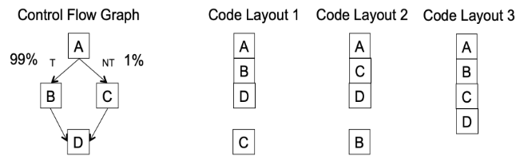

基本块和 Traces¶
约 2522 个字 预计阅读时间 8 分钟
规范形式¶
语义分析阶段生成的树必须翻译成汇编语言或机器语言。Tree 语言的运算符经过精心选择，以匹配大多数机器的功能，但是
- Tree 语言的某些方面与机器语言并不完全对应
- Tree 语言的某些方面会干扰编译时优化分析
例如
CJUMP会在两个分支之间选择一个跳转- 真正的汇编指令里有 conditional jump，在条件成立会跳转，条件不成立的情况下就执行自己的后一条指令
- 而在 IR tree 里无论成立还是不成立，都需要跳转
- 表达式内的
ESEQ结点不方便- 评估子树的不同顺序会产生不同的结果（因为执行
s时的副作用） - 但是能够以任意顺序计算表达式的子表达式是很有用的
- 评估子树的不同顺序会产生不同的结果（因为执行
- 表达式中的
CALL结点也依赖于顺序（有副作用）- 当尝试将参数放入一组固定的形式参数寄存器时
- 例如，
CALL(f, [e1, CALL(g, [e2, ...])])
- 中间代码具有通用树形形式
- 易于从 AST 生成
- 但很难直接转换为汇编（汇编代码是一系列语句）
因此，需要将 IR 转换为规范形式以消除以上的问题
这就引入了规范形式的概念：
- 所有
SEQ结点都沿着右链 - 所有语句都带到树的顶层
- 可以直接生成程序集
一个函数只是一个包含所有内容的大 SEQ 语句，从而可以更加方便地转换为汇编代码
为了实现转换为规范形式的目标，可以分三个阶段改造 IR 树：
- 将一棵树重写为不带
SEQ或ESEQ结点的一系列规范树（canonical trees） - 该列表被分组为一组基本块（basic blocks），其中不包含内部跳转或标签
- 基本块被排序为一组 traces，其中每个
CJUMP后面紧跟着其错误分支的标签
规范树（线性化）的过程¶
规范树（Canonical Trees）具有如下的性质：
- 无
SEQ或ESEQ - 每个
CALL的父级是EXP(...)或MOVE(TEMP t, ...)
因此：
- 每棵规范树只包含一个语句结点，即根结点，其他结点均为表达结点
CALL结点的父结点必须是一颗规范树的根结点，且必须是EXP(...)或MOVE(TEMP t, ...)- 一棵规范树中只能有一个
CALL结点，因为EXP(...)和MOVE(TEMP t, ...)只能包含一个CALL
消除 ESEQ（ESEQ 的线性化规则）¶
如何消除 ESEQ 结点
将它们在树中提升得越来越高，直到它们成为 SEQ 结点
具体的规则包括：
| 原始 | 转换后 |
|---|---|
| ESEQ(s1, ESEQ(s2, e)) | ESEQ(SEQ(s1,s2), e) |
| BINOP(op, ESEQ(S, e1), e2) | ESEQ(s, BINOP(op, e1, e2)) |
| MEM(ESEQ(s,e1)) | ESEQ(s, MEM(e1)) |
| JUMP(ESEQ(s, e1)) | SEQ(s, JUMP(e1)) |
| CJUMP(op, ESEQ(s, e1), e2, l1, l2) | SEQ(s, CJUMP(op, e1, e2, l1, l2)) |
接着考虑副作用对线性化规则的影响，考虑 BINOP(op, e1, ESEQ(s, e2))，因为 s 可能有影响 e1 值的副作用，所以不能直接互换 s 和 e1 的顺序，可以使用临时存储 e1 的值
交换性
交换性（Commutativity）：如果 s 不影响 e 的值，则语句 s 和表达式 e 可以交换
若不可交换，则可能需要引入临时变量来保存 e 的值，从而得到规范树
由此，我们可以得到在不同交换性下的转换规则：
-
如果
se1是可交换的原始 转换后 BINOP(op, e1, ESEQ(s, e2)) ESEQ(s, BINOP(op, e1, e2)) CJUMP(op, e1, ESEQ(s, e2), l1, l2) SEQ(s, CJUMP(op, e1, e2, l1, l2)) -
如果
se1是不可交换的原始 转换后 BINOP(op, e1, ESEQ(s, e2)) ESEQ(MOVE(TEMP t, e1),
ESEQ(s, BINOP(op, TEMP t, e2)))CJUMP(op, e1, ESEQ(s, e2), l1, l2) SEQ(MOVE(TEMP t, e1),
SEQ(s, CJUMP(op, TEMP t, e2, l1, l2)))
但是我们很难静态地确定语句 s 与表达式 e 是否可以交换，因此需要做一个保守的近似（conservative approximation）。这种近似可以如下：
- 常量可与任何语句交换
- 空语句可与任何表达式交换
- 假设任何其他情况都不具备交换性
一些扩展内容
BINOP 和 MOVE 的规则依赖于交换较低位置的语句 s 和表达式 e 的顺序，当 s 无法改变 e 中使用的值时，可以安全地完成此操作
语句 s 和表达式 e 不能互换的两个条件
- 该语句可以更改表达式使用的临时变量的值
- 该语句可以更改表达式使用的内存位置的值
为了检查这两点
- 临时变量：很容易确定语句是否更新表达式使用的临时变量，因为临时变量具有唯一的名称
- 内存：这要困难得多，因为两个内存位置可能是别名（aliases）关系
因此更精确（但仍然保守）的近似可以使用一些别名分析技术
将 CALL 移至顶层¶
在现代处理器中，函数调用的返回值一般保存到专用的寄存器中，那么考虑 BINOP(PLUS, CALL(...), CALL(...))，第二次调用的返回值会覆盖第一次调用的返回值
因此，我们可以立即将每个返回值分配到一个新的临时寄存器中，并把 CALL 移至顶层
CALL(fun, args) -> ESEQ(MOVE(TEMP t, CALL(fun, args)), TEMP t)
消除 SEQ¶
应用上述规则后，我们可以得到 SEQ(SEQ(SEQ(..., sx), sy), sz) 的形式，只需要重复利用如下规则
SEQ(SEQ(a, b), c) = SEQ(a, seq(b, c))
即可获得如下形式的表达式
SEQ(s1, SEQ(s2, ..., SEQ(sn-1, sn)...))
进而将其看作一个简单的语句列表
s1, s2, ..., sn, ...
其中每个 si 均不包含 SEQ/ESEQ 结点
处理条件分支¶
CJUMP 的问题：在大多数机器上没有双向分支的对应项
目标：重新排列树，使得 CJUMP(cond, l_t, l_f) 被 LABEL(l_f) 紧跟着
解决方案：
- 将规范树列表形成基本块（basic block）
- 将基本块排序为 traces
Basic Blocks¶
基本块（basic block）是始终在开头输入并在结尾退出的语句序列，即：
- 第一个语句是一个
LABEL - 最后一条语句是
JUMP或CJUMP - 该块中没有其他
LABEL、JUMP或CJUMP
构建算法为：
- 从头到尾扫描
- 当找到标签（包括跳转的目的地址）时，结束前一个块并开始一个新块并
- 每当找到
CJUMP/JUMP时，当前块就会结束并开始下一个块 - 如果留下了一个没有
CJUMP/JUMP结尾的块，则附加一个到下一个块的跳转 - 如果一个块在开始时没有标签，添加一个标签
Basic Blocks
此外，引入控制流图（Control Flow Graph，CFG）：结点是基本块，边是它们之间的跳转关系。在某些情况下，CFG 的结点是一条语句（如活跃变量分析和寄存器分配部分）
Control Flow Graph
Traces¶
基本块可以按任意顺序排列，执行程序的结果将是相同的。基于这个属性，我们可以优化跳转的性质和次数：
- 选择块的顺序，使得每个
CJUMP都被它的错误分支跟着 - 安排许多无条件
JUMP后紧跟着其目标标签- 这样可以允许删除无条件跳转，使得编译后的程序运行得更快一些
- *其他方面：可能还可以优化指令缓存等
Basic Block Reordering

99% 和 1% 代表执行频率。可以看到，Code Layout 1 减少了指令预取的中断，提高了 I-cache 的命中率
找到基本块的良好排序的常用技术是构造 trace
Trace: 执行过程中可以连续执行的语句序列（或者说一系列基本块）
A covering set of traces: 每条 trace 都是无循环的，且每个块必须恰好位于一个 trace 中
生成 covering set of traces 的基本算法是对 CFG 的深度优先遍历：
- 从某个 basic block 开始，往后继结点遍历，标记每个被访问的 basic block 并将其附加到当前 trace 中
- 当到达某个 basic block，其后继结点均已标记，这个 trace 就算完了
- 选择一个未标记的 basic block 作为下一个 trace 的起点，不断迭代，直到所有的 basic blocks 都被标记
\begin{algorithm}
\caption{Generating a Covering Set of Traces}
\begin{algorithmic}
\State Put all the blocks of the program into a list $Q$
\While{$Q$ is not empty}
\State start a new (empty) trace, call it $T$
\State remove the head element $b$ from $Q$
\While{$b$ is not marked}
\State mark $b$; append $b$ to the end of the current trace $T$;
\State examine the successors of $b$
\If{there is any unmarked successor $c$}
\State $b \gets c$
\EndIf
\EndWhile
\State end the current trace $T$
\EndWhile
\end{algorithmic}
\end{algorithm}
Generating a Covering Set of Traces
Covering set of traces:
- {a, b, c, d}
- {d, f, h}
- {g}
考虑跳转¶
我们更喜欢 CJUMP 后跟其错误标签，因为这可以转换为机器代码中的条件跳转，因此：
- 对于任何
CJUMP后跟其真实标签分支的情况- 交换真假标签并反转条件
- 对于任何
CJUMP后跟其错误标签分支的情况- 这是我们想要的情况，不需要做任何事情
- 对于任何后面没有标签的
CJUMP(cond, a, b, lt, lf)- 替换为
对于无条件跳转 JUMP，若一个 JUMP 被其目标标签紧跟着，则可以删除这个 JUMP
最优 Traces¶
“最优”需要标准，例如，任何频繁执行的指令序列（例如循环体）应该具有自己的 trace：
- 这有助于减少无条件跳转的数量
- 这有助于其他类型的优化
- 寄存器分配
- 指令调度
- ...
Optimal Traces
(a): While循环的每个迭代有一个 CJUMP 和一个 JUMP
(b): 使用了不同 traces, 但每个迭代仍有一个 CJUMP 和一个 JUMP
(c): 每个迭代都没有 JUMP
创建日期: 2024年6月22日 00:07:07